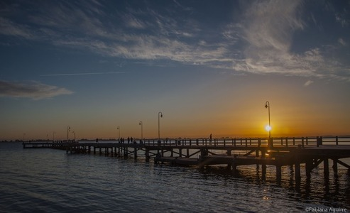
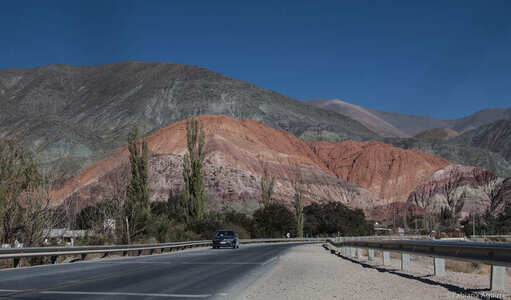

Galería de Paisajes

Parque Nacional Los alerces, Esquel

Parque Nacional Los alerces, Esquel

Río Gomez, San Francisco del Monte de Oro

Isla Victoria, Bariloche

Parque Nacional Sierra de las Quijadas, San Luis

El Chaltén, Santa Cruz

Lago del Desierto, Santa Cruz

Río Piñeyro, General Alvear, Buenos Aires

Epecuén, Adolfo Alsina, Buenos Aires

Epecuén, Adolfo Alsina, Buenos Aires
- 
Laguna de Chascomús, Buenos Aires
- 
Cerro de los 7 Colores, Purmamarca, Jujuy